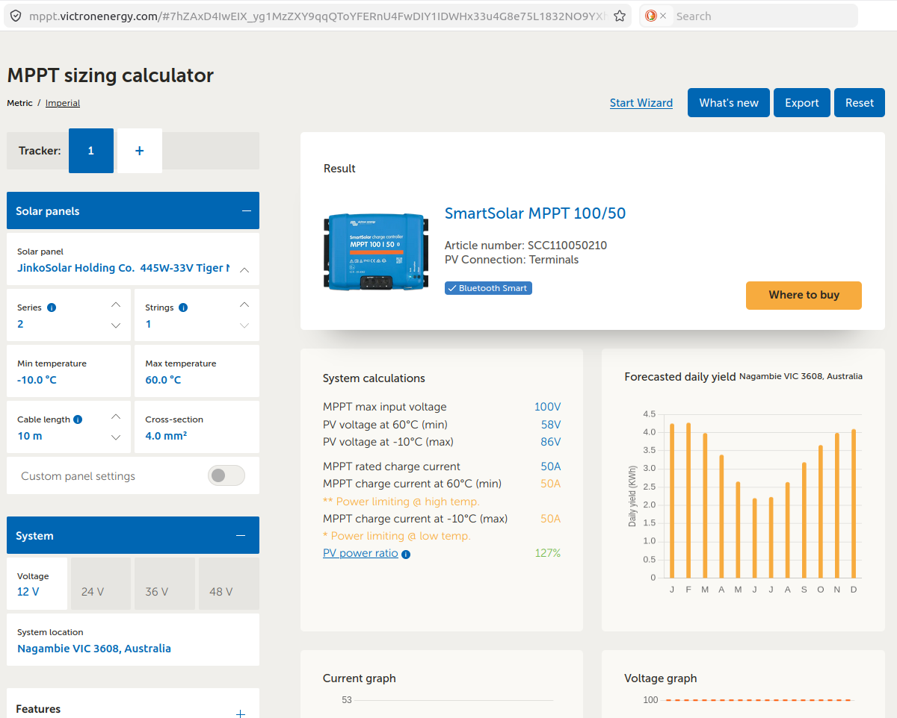
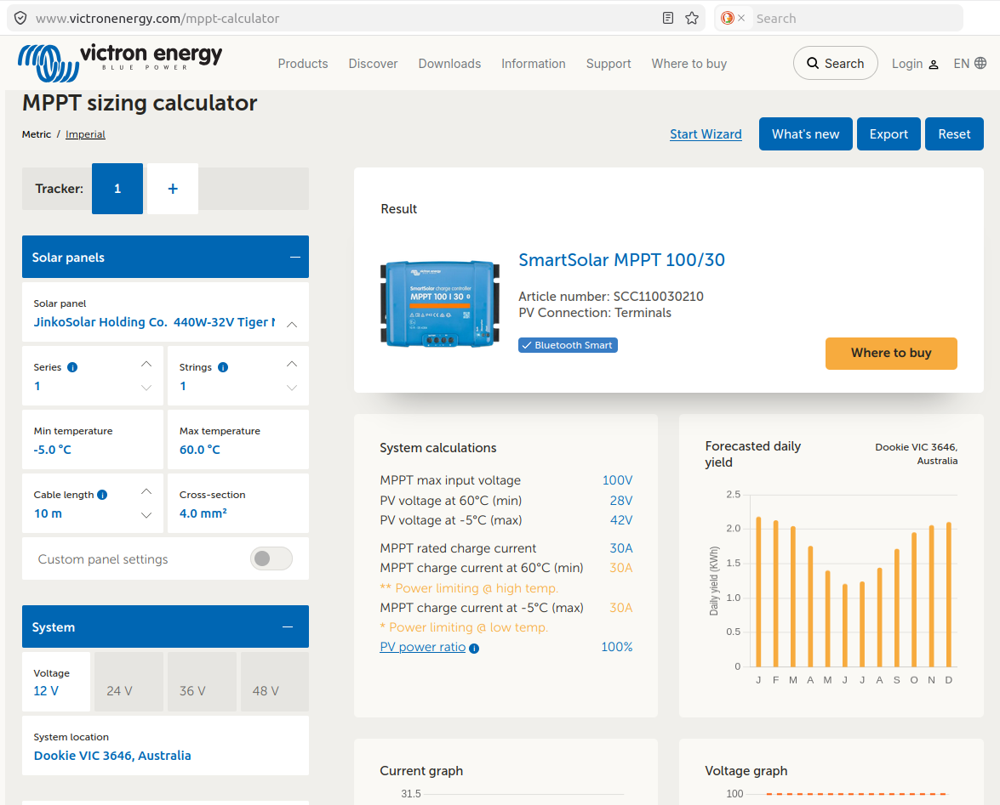
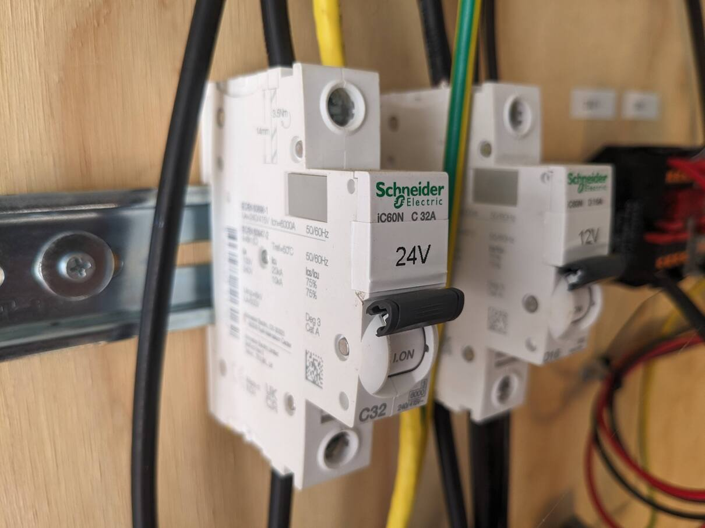

Power
Powering the flux tower
Power demand
Campbell Scientific power budget spreadsheet and tutorial. This spreadsheet provides power consumption data for Campbell Scientific devices and allows to calculate an overall power budget.
Victron MPPT calculator: Suggests charge controller model, calculates daily yield from solar panel size and configuration, voltage, and location. This calculator includes an allowance for oversizing solar panels on a charge controller.

For comparison: Flux-towers in the ICOS network (Class 1, 2) are required to have at least 2.5-3 kW of continuous(!) power available year-round Rebmann et al. (2018) .
Power sources
Mains power
If an electrical power grid is available nearby to tap into, mains power is a convenient power source.
E.g. the Ecosense Forest in Germany with flux tower many research systems is powered from the nearest electrical interchange 700 m away (Tesch et al. (2025)).
The Kranzberger Forst research site with scaffolding towers and canopy crane site is connected to continuous municipal electrical power Häberle et al. (2003) from the nearby township.
The install of a 240V electrical system at a tower location requires a certified electrician. Any 240V power connection beyond plugging an instrument into a e.g. solar-powered inverter powerboard requires electrical inspection and approval!
Generator
A generator is a powerful source of energy. I requires regular maintenance (e.g. every 100 hours of runtime) and re-fueling, though. Daily running costs are relatively high compared to solar power. Operational costs of the generator powering the Tumbarumba tower is about $9 per day (fuel - pre-2026 price - and regular maintenance included). That generator requires maintenance four times a year and re-fueling twice per year. It runs for about six to eight hours every 8 days to charge the batteries that power the research site. A local car mechanic services the generator when the maintenance interval is up. The run-time of the generator is monitored online to advice the mechanic.
If a generator is used, “the effect of its exhaust gases on the trace gas measurements must be minimised” and wind-direction-based screening might be required to avoid generator exhaust gases in the footprint (Aubinet, Vesala, and Papale (2012)). The generator should be deployed away from the flux instruments to avoid bias Moore and Griebel (2024) , Rebmann et al. (2018) .
Solar
Solar panels on tower can affect the wind flow and radiation patterns. Consider wind loading on tower!
- DIY battery system / professionally installed power system
Solar power systems
- Battery box
- Solar panel size
- Solar panel mount
- Charge controller
- Battery type, recommendations
- Earth rod
- Fuses, switches
Charge controllers
- Morningstar ProStar MPPT solar charge controller. The maximum solar panel size: 300W@12V.
- Victron SmartSolar Charge controllers Usually, for a 400 W panel, use the 100/30A or 100/50A charge controller. Check the Victron MPPT sizing calculator to determine the charge controller size, see below:

Power to the instruments, electrical wiring
- Victron wiring guidebook for solar power battery systems: “Wiring unlimited” Victron Energy Wiring unlimited (pdf), Leeftink (2019)
- For general wiring and soldering practices, refer to NASA Workmanship standard for crimping, interconnecting cables, harnesses and wiring, NASA (2015)
- 12V, 24V, split systems
- cable connections (crimps, soldering, on-location options)
- earth bars (e.g. Jaycar copper bar with 3d printed feet)
- sensor hubs
- glue-on cable routing
Fuses
Circuit breakers
Always check if the circuit breaker is rated for your desired voltage, e.g. 12V or 24V.
12-60V rated circuit breakers, DIN-rail mountable e.g
General Minature circuit breakers (check voltage ratings!)

Schneider DIN-rail mounted miniature circuit breaker rated for 12 - 60V. Here used for the 24V circuit that powers all equipment on top of the Tumbarumba tower (Markus Loew).
Fuses
car fuses (blade or mini-blade)
Miniblade fuses fit the Phoenix fused DIN-rail terminals (recommended option for sensors and instrumentation)
In-line blade fuse for e.g. battery terminals from e.g. automotive applications: https://www.jaycar.com.au/30a-32vdc-water-resistant-inline-standard-blade-fuse-holder/p/SZ2042
In-line glass fuse holder e.g. https://au.rs-online.com/web/p/fuse-holders/2375259
ANL bolt-down fuses usually for high amperages for e.g. solar battery systems https://www.solar4rvs.com.au/collections/circuit-breakers-fuses-holders-anl-cnn
MIDI bolt-down fuses (smaller than ANL fuses, do not support the very high end of amperage compared to ANL, but similar functionality in general) https://au.rs-online.com/web/c/?searchTerm=midi+fuses
Check amperage, bolt size, overall dimension to suit your application!